Interactive Scientific Computing¶
The term Interactive Scientific Computing is here understood as using a computer in a similar way as you use a handheld calculator. You enter some input and you expect that input to be processed right away to produce results. It does not mean that you get the answer immediately, but calculations are done take an amount of time that allow a human to wait before a new command is submitted.
Non-interactive computing refers to the way people typically interact with Supercomputers. Supercomputers are large computing devices usually build as clusters of individual computers. Supercomputers in many cases are used by tens or hundreds of users at the same time. For the typical use of Supercomputers, the computations are programmed in advance, the user submit jobs expecting that those jobs start being executed sometime in the future and produce the result that will be analyzed later on.
The idea of using a Supercomputer like a HPC cluster could be intimidating for beginners. However, you could have strong motivations for start using this kind of machines. Your research have scaled to a point where your desktop computer or laptop is not longer capable of managing the task, you need specialized software packages and you do not want to spent time compiling or installing software and you would like to rely on software that is already present on the HPC cluster.
For taking advantage of WVU’s High Performance Computing cluster for interactive scientific computing all that you need is a web browser. On this lesson you will not have to learn Linux commands, you just need to execute one for the purpose of downloading all the materials for the tutorials but beyond that your interaction will take place on a friendly web interface. You do not have to manually submitting jobs or editing submission scripts, these are tasks very important for HPC but they will delegated for other lesson.
We will be using a tool, a web-based client portal, that hides all that complexity and allow you to start using powerful computers for your research from a web interface, with minimal effort and fast learning curve.
Several technologies are involved here and it is important to understand how those different pieces are interconnected.
Open OnDemand is a web-based client, based on the Ohio Supercomputer Center’s proven “OSC On Demand” platform, that enables HPC centers to install and deploy advanced web and graphical interfaces for their users. HPC resources are accessible from a web browser without the user having to install any special software or plugin.
The path for this tutorial is as follows. First we will demonstrate how to access the open on demand portal. Next we will create Jupyter and RStudio sessions and opening a terminal and a file manager.
Accessing the Dashboard¶
First, go to Thorny Flat On Demand Dashboard
The first page you will see is asking for your credentials
After entering your credentials and using your DUO authentication you will land on the Open On Demand Dashboard:
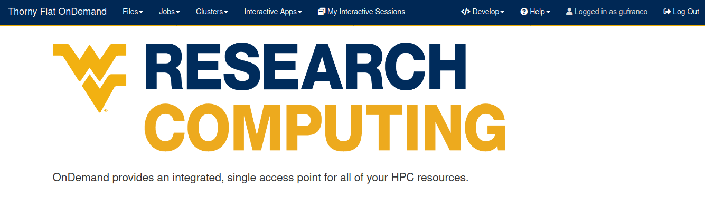From this dashboard you can launch interactive jobs, open terminals and access a file manager, we will see each of those operations in the next sections.
Interactive applications¶
From the dashboard go to Interactive Apps. There are several options there, we will show 2 apps that are currently ready for being used. Jupyter Notebooks and RStudio.
Jupyter¶
For Jupyter click on Ìnteractive Apps > Jupyter Notebook. A form is shown with all the options available to create the Jupyter session.
A good starting point is to select CPython 3.7.4 as the Python version, select standby as the queue and 4 hours as the wall time. There are options for alternative Python versions, queues and walltimes. A short description of each options is shown on the form.
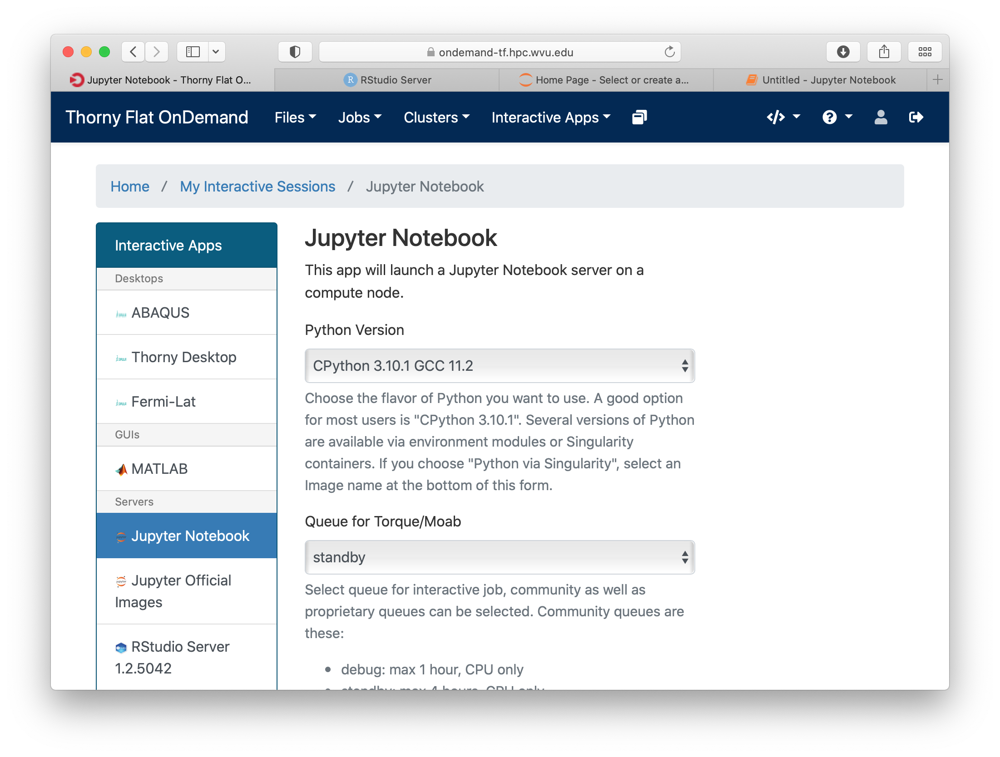The next fields on the form ask for the number of cores, GPU cards, extra modules and the singularity image in case you have selected that as your Python version.
Notice that taking advantage of multiple cores depends on your code being able to use those cores. In the case of Python that usually means that your code is using multiprocessing module or you are using numpy with multi-threading capabilities. The usage of multiple cores is not something that happens automatically so if you are not sure asking for one core is enough. A similar situation happens with GPUs noticing that only the queue comm_gpu_inter give you access to GPUs for community nodes.
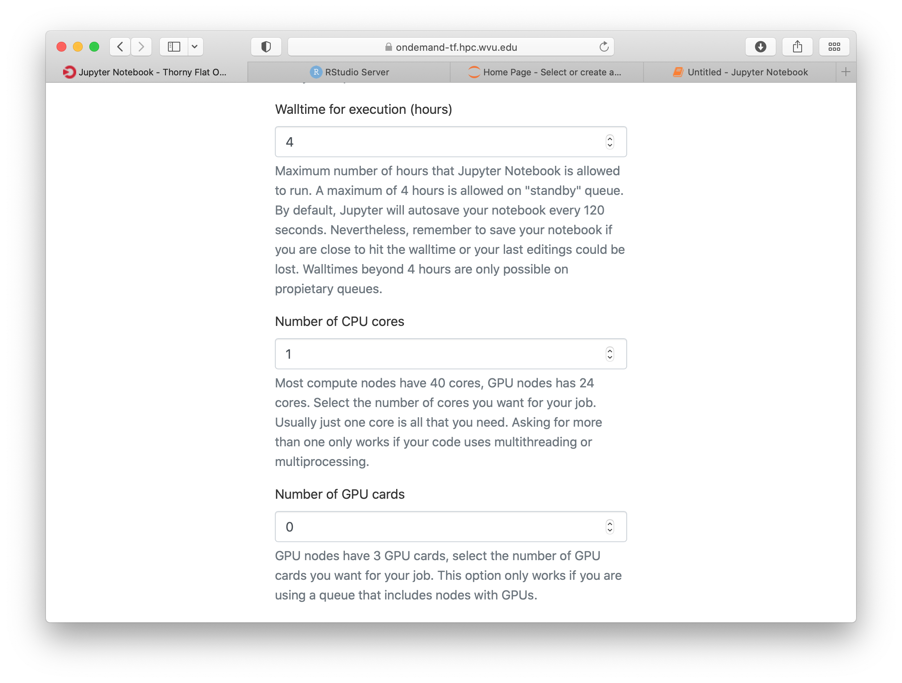Once you have customize the parameters for your Jupyter session, click on Launch. Open On demand will launch a new interactive session and when the interactive session is launched you will get a button to connect to the Jupyter notebook.
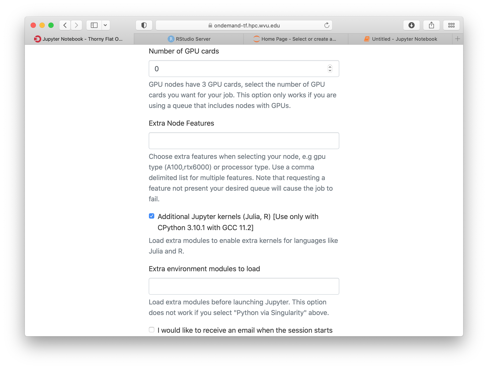The Jupyter session is launched on a compute node. The Jupyter interface shows as file manager where you can select a notebook to launch, upload one from your local computer or create a new Notebook, go to New > Python 3 to create a new Jupyter notebook with Python 3 as kernel.
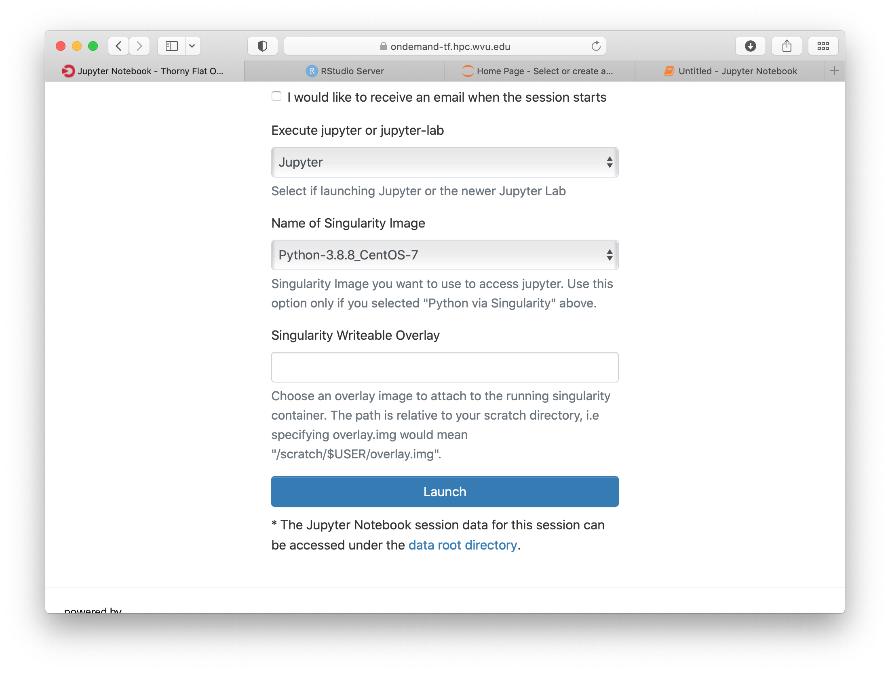The new notebook give you entries for typing Python instructions that are executed when you type SHIFT-ENTER
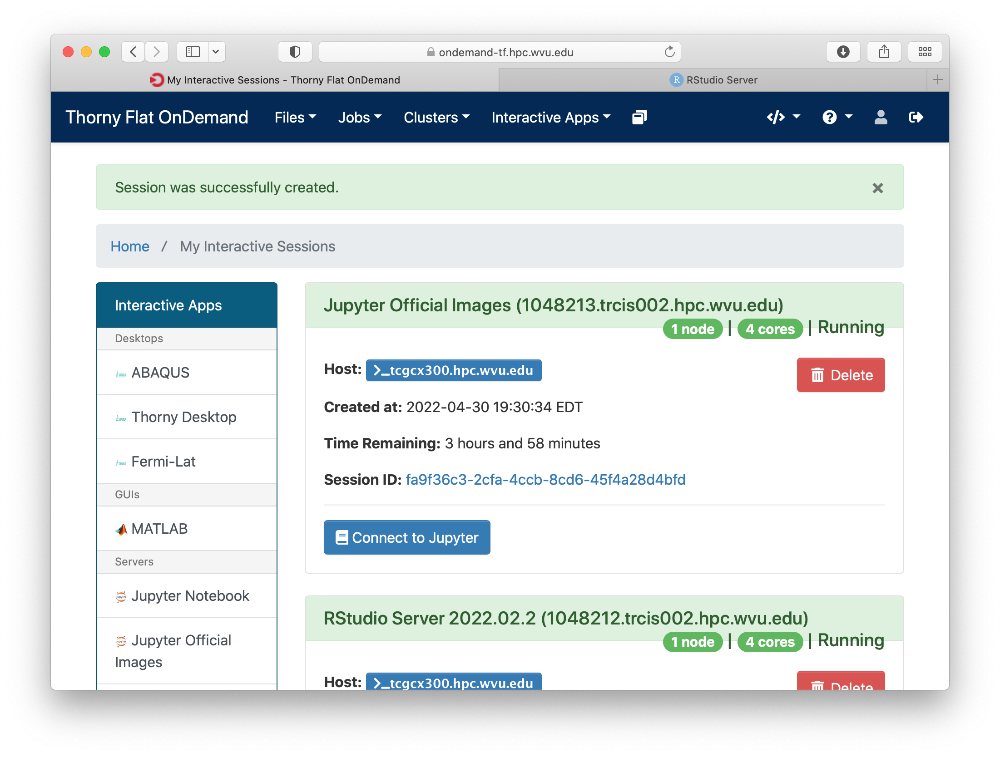RStudio¶
Another popular interactive environment is RStudio, select Interactive Apps > RStudio. The options in the form are very few. Select a queue such as standby, 4 hours of wall time and 1 core.
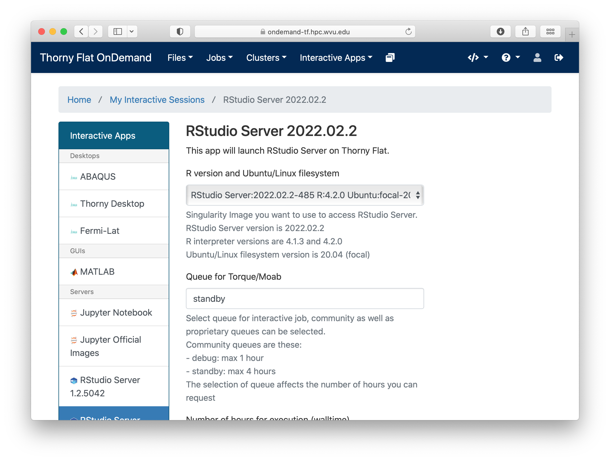When you click on Launch, Open on Demand will create a new interactive session on Thorny Flat and when the job starts execution, a button appears to open the session on a new tab.
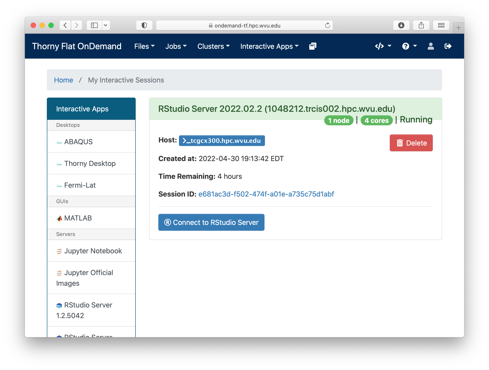The interface for RStudio shows the commands on the left and variables and plots on the right.
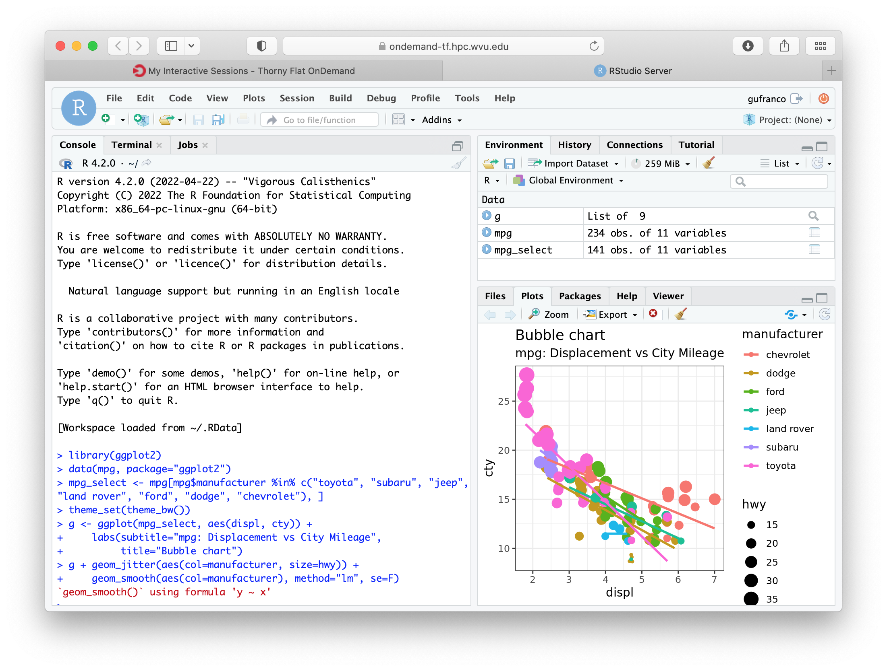The File manager¶
The Open On demand dashboard also offers a simple but useful File Manager that give you options to view, edit, download and rename files. It is a simple way to see plots and download individual files to your local computer.
To access the File Manager on the Dashboard, go to Files > Home Directory. The File Manager is shown as
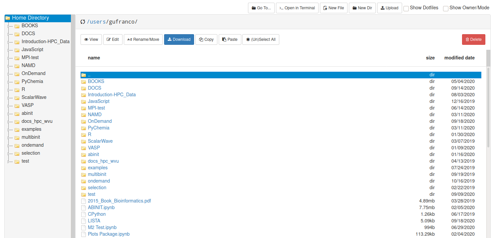Job manager¶
Another useful tool integrated with the Dashboard is the Job Manager, you can see the jobs currently submitted on the cluster. Go to Jobs > Active Jobs to access the Job Manager
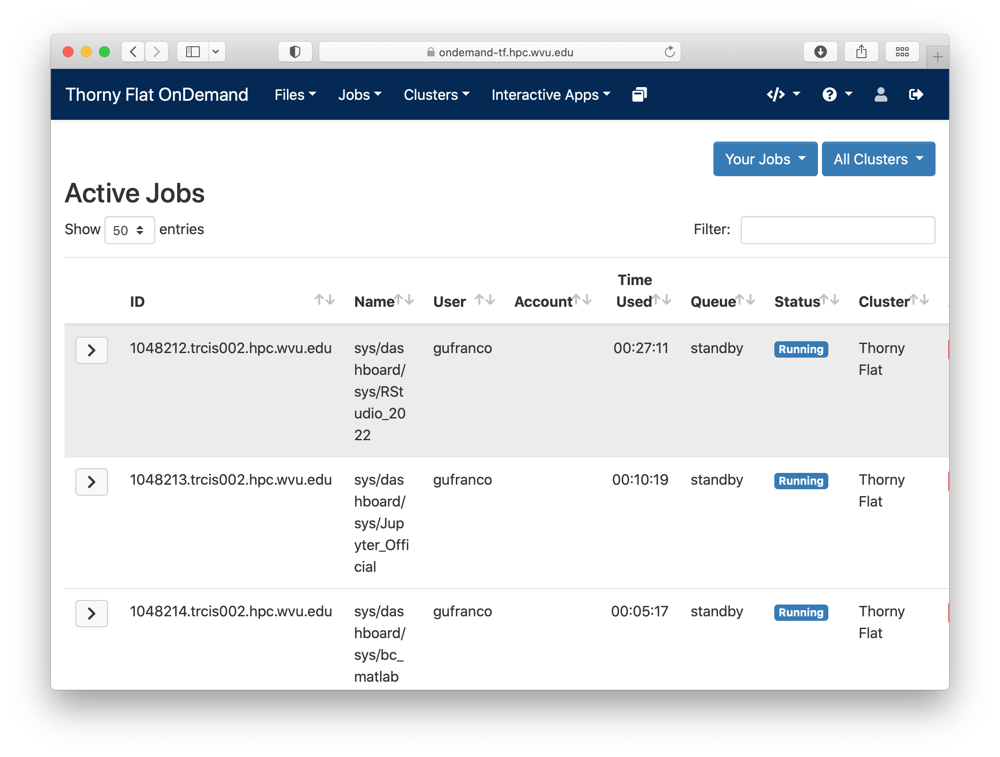Terminal¶
Finally a Terminal session can be opened from the dashboard, the terminal runs on the head node exactly as a normal connection to the cluster via SSH.